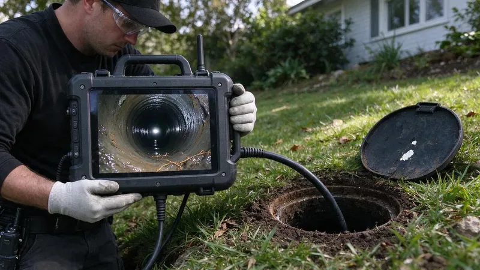

A standard home inspection covers a lot. The inspector checks the roof, electrical panel, HVAC, water heater, visible plumbing and much more. What most general inspections do not cover is the inside of the main sewer line that runs from the house to the street or septic tank. An inspector may run water in every fixture and watch it drain, but a line can drain fine during a 20 minute test and still be cracked, sagging or packed with roots. For a home buyer in Georgia, a sewer camera inspection is one of the most useful add-ons you can order before closing.
What a Sewer Camera Inspection Involves
A plumber feeds a waterproof, high-resolution camera on a flexible push cable through a cleanout, usually located near the foundation or in the front yard. As the camera travels the length of the line, it records video and displays footage on a monitor in real time. Most systems include a locating transmitter at the camera head, so the plumber can mark the exact position and depth of any problem from the surface above. The inspection usually takes 30 to 60 minutes, and you should get a copy of the recording along with a written summary.
If there is no accessible cleanout, the camera can sometimes go in through a roof vent or after pulling a toilet, though that may add to the cost. Most residential sewer scopes cost between $150 and $350.
Before the visit, ask the listing agent whether the seller has any records of past sewer work, such as root cutting invoices or a previous lining job. That history helps the plumber know what to watch for and whether earlier repairs are holding up.
What the Camera Can Reveal
Sewer problems are expensive, and they are rarely visible from inside the house. A camera inspection can reveal issues such as:
- Root intrusion at joints, common near mature trees with thirsty roots.
- Bellies or sags where the pipe has settled and waste collects.
- Offset or separated joints caused by soil movement over the years.
- Cracked or collapsed sections in clay tile or cast iron pipe.
- Heavy corrosion and scale inside older cast iron lines.
- Grease buildup that points to ongoing maintenance needs.
- Improper past repairs or mismatched pipe materials joined without proper couplings.
Why It Matters for Georgia Buyers
Houses from the late seventies through the mid nineties may still have polybutylene supply pipe, which is known to fail and is worth replacing.
Housing stock in most areas spans a wide range of ages and building methods, and each era brings its own risks. Homes in older neighborhoods may still have original clay tile or cast iron sewer lines that are well past their normal lifespan. A lot of homes built from the 1960s through the 1980s used cast iron under the slab, which corrodes from the inside and can crack along the bottom of the pipe. Even newer homes with ABS or PVC are not safe, since expansive soils and poor original bedding can cause bellies and separated joints.
Landscaping adds another twist. Shade trees are valued for comfort and curb appeal, but their roots aggressively seek out moisture, and a sewer line is a reliable source. Rural properties and some edge-of-town lots rely on septic systems instead, and a camera can show the condition of the line running to the tank, which pairs well with a separate septic inspection.
Clay soil can make drain fields slow to absorb water, which shows up as soggy yards, slow drains, or sewage backups after heavy rain.
How the Results Help You Negotiate
Sewer repairs are expensive. A spot repair can run $1,500 to $4,500, while a full lateral replacement or trenchless lining may cost $4,000 to $12,000 or more. Discovering a problem before closing gives you options. You can ask the seller to complete the repair, request a credit or price reduction, or decide the home is not the right fit. If the line looks healthy, you gain peace of mind and a baseline recording to compare against in the future. Sellers can benefit too, since a pre-listing scope lets them address problems on their own terms rather than during a tense negotiation.
When to Call a Professional
Book the sewer scope during your inspection contingency period so there is time to get repair quotes if needed. Choose a licensed plumber instead of a general inspector, since a plumber can interpret the footage, locate defects precisely and explain realistic repair options. HGR Plumbing performs sewer camera inspections for buyers, sellers and agents across Georgia and provides a clear video and written report. Call (770) 470-3778 to book an inspection before your contingency deadline.
Need a licensed plumber in Georgia?
HGR Plumbing answers 24/7 and offers same-day service across Georgia.